🦸 漫威电影宇宙
完整观影顺序 · 超级英雄档案 · 角色解析
🎬 漫威电影观看顺序（时间线版）
按剧情时间线排列，体验完整故事脉络
第一阶段 · 复仇者集结
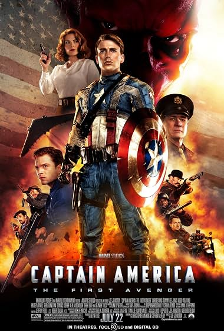
《美国队长1》（2011）· 二战起源故事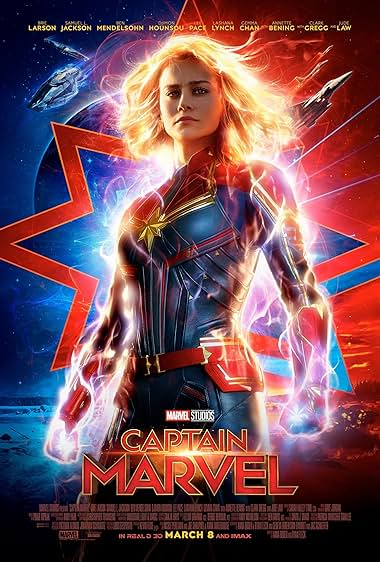
《惊奇队长》（2019）· 1995年故事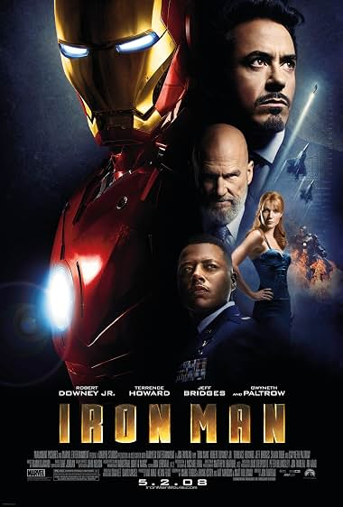
《钢铁侠》（2008）· MCU开山之作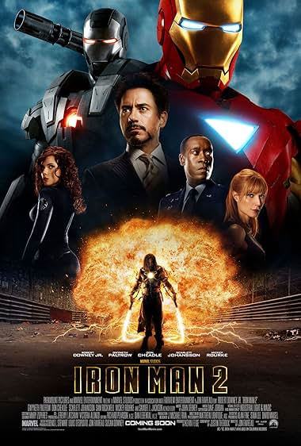
《钢铁侠2》（2010）· 黑寡妇首秀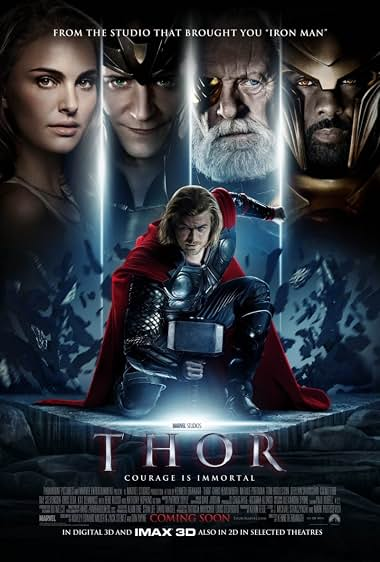
《雷神》（2011）· 阿斯加德王子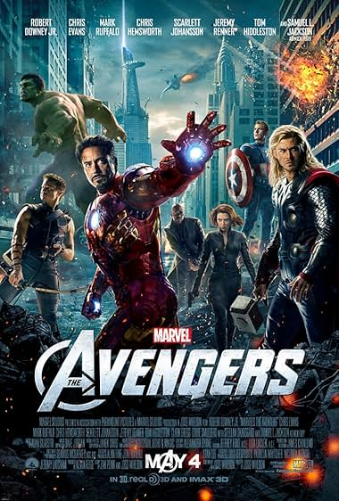
《复仇者联盟》（2012）· 初代六人集结
第二阶段 · 新世界开启
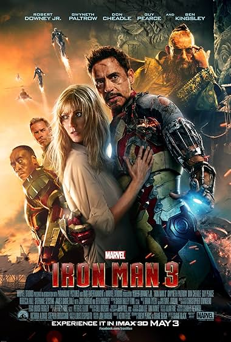
《钢铁侠3》（2013）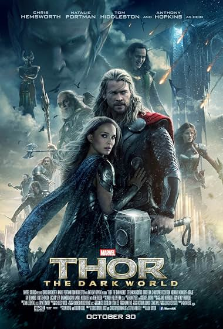
《雷神2：黑暗世界》（2013）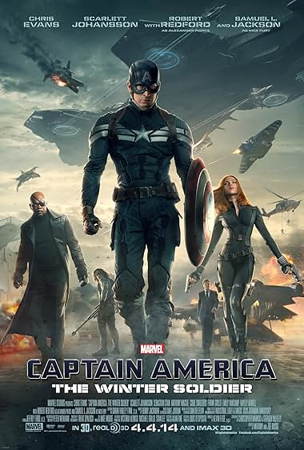
《美国队长2：冬日战士》（2014）· 神盾局崩塌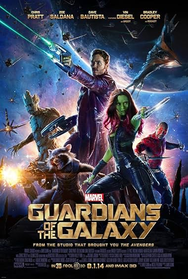
《银河护卫队》（2014）· 星爵登场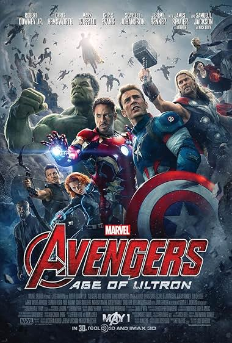
《复仇者联盟2：奥创纪元》（2015）· 幻视诞生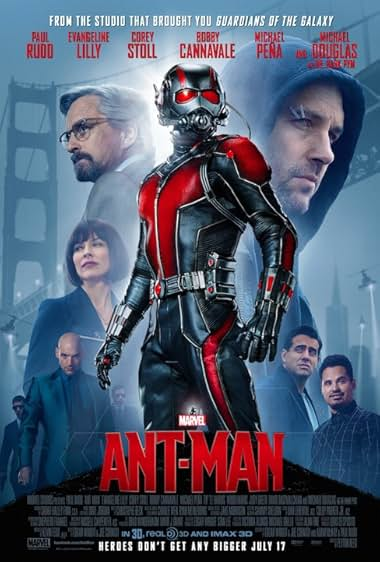
《蚁人》（2015）· 量子领域初探
第三阶段 · 无限传奇
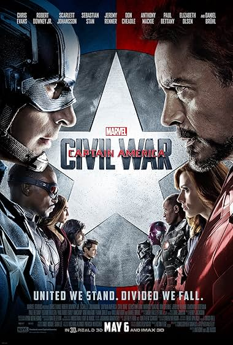
《美国队长3：内战》（2016）· 复仇者分裂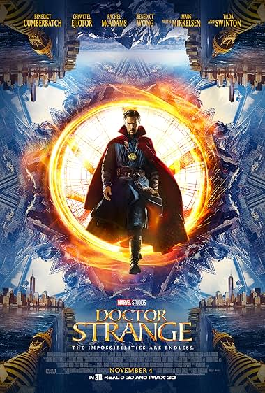
《奇异博士》（2016）· 魔法世界开启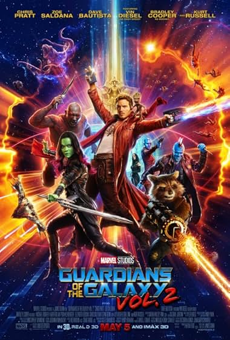
《银河护卫队2》（2017）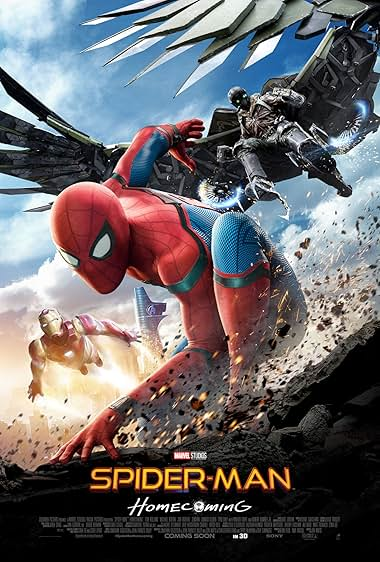
《蜘蛛侠：英雄归来》（2017）· 小蜘蛛加入MCU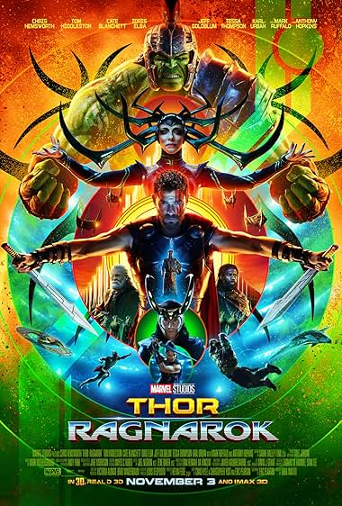
《雷神3：诸神黄昏》（2017）· 阿斯加德毁灭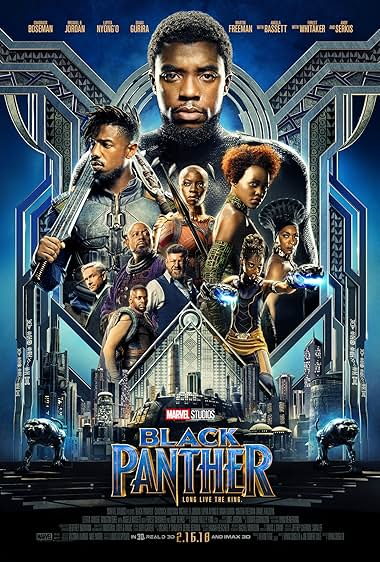
《黑豹》（2018）· 瓦坎达 Forever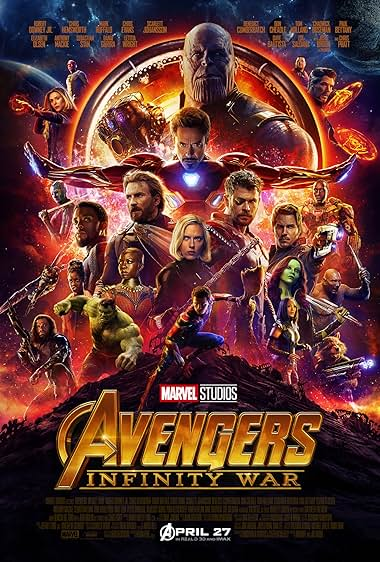
《复仇者联盟3：无限战争》（2018）· 灭霸响指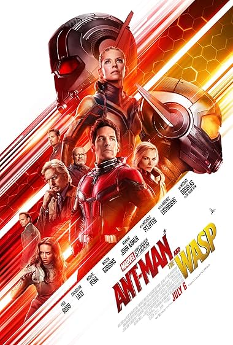
《蚁人2：黄蜂女现身》（2018）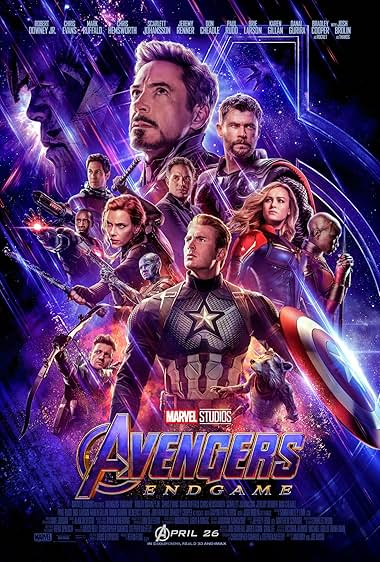
《复仇者联盟4：终局之战》（2019）· 初代谢幕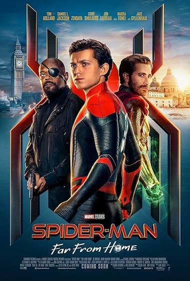
《蜘蛛侠：英雄远征》（2019）· 第三阶段收官
第四阶段 · 多元宇宙传奇
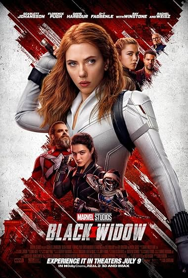
《黑寡妇》（2021）- 《尚气》（2021）
- 《永恒族》（2021）
- 《蜘蛛侠：英雄无归》（2021）· 三代蜘蛛侠同框
- 《奇异博士2：疯狂多元宇宙》（2022）
- 《雷神4：爱与雷霆》（2022）
- 《黑豹2：瓦坎达万岁》（2022）
第五阶段 · 康之王朝
- 《蚁人3：量子狂潮》（2023）· 康登场
- 《银河护卫队3》（2023）
- 《惊奇队长2》（2023）
- 《死侍与金刚狼》（2024）
- 《美国队长4：美丽新世界》（2025）
💡 观影提示：以上顺序为剧情时间线，首次观看也可按上映顺序体验，彩蛋和惊喜更完整。
🦸 核心超级英雄档案
MCU主要角色设定、性格与能力解析
钢铁侠 / 托尼·斯塔克
首次登场：《钢铁侠》（2008）
演员：小罗伯特·唐尼
性格：天才、自恋、嘴硬心软、责任感强、自我牺牲精神
核心能力：天才级智商、纳米战甲、飞行、激光武器、AI辅助（贾维斯/星期五）
弱点：PTSD、焦虑症、凡人之躯
经典台词："I am Iron Man." / "爱你三千遍"
美国队长 / 史蒂夫·罗杰斯
首次登场：《美国队长1》（2011）
演员：克里斯·埃文斯
性格：正直、领导力、坚持原则、老派绅士、团队核心
核心能力：超级士兵血清、振金盾牌、格斗大师、战术指挥
弱点：过于理想主义、时代脱节感
经典台词："I can do this all day." / "复仇者，集结！"
雷神 / 索尔
首次登场：《雷神》（2011）
演员：克里斯·海姆斯沃斯
性格：豪爽、鲁莽、幽默、重情义、成长型英雄
核心能力：雷神之锤/风暴战斧、雷电操控、阿斯加德之力、长生不老
弱点：傲慢、家庭创伤、情感脆弱
经典台词："Bring me Thanos!" / "For Asgard!"
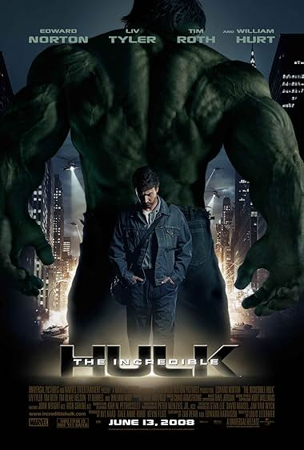
绿巨人 / 布鲁斯·班纳
首次登场：《无敌浩克》（2008）
演员：马克·鲁法洛
性格：温和、内向、天才科学家、自我压抑、团队智囊
核心能力：无限力量、超强耐力、再生能力、天才级核物理学家
弱点：情绪失控、浩克人格难以控制
经典台词："Hulk... SMASH!" / "That's my secret, Cap. I'm always angry."
黑寡妇 / 娜塔莎·罗曼诺夫
首次登场：《钢铁侠2》（2010）
演员：斯嘉丽·约翰逊
性格：冷静、精明、间谍本能、情感内敛、团队粘合剂
核心能力：顶尖格斗、间谍技巧、黑客技术、多语言、战术制定
弱点：普通人身体素质、过往黑历史
经典台词："I have red in my ledger." / "See you in a minute."
鹰眼 / 克林特·巴顿
首次登场：《雷神》（2011）客串
演员：杰瑞米·雷纳
性格：务实、低调、顾家好男人、导师型
核心能力：百发百中、箭术大师、近身格斗、战术配合
弱点：普通人、听力障碍
经典台词："You walk out that door, you are an Avenger."
蜘蛛侠 / 彼得·帕克
首次登场：《美国队长3》（2016）
演员：汤姆·赫兰德
性格：话痨、少年感、善良、成长中、渴望认可
核心能力：蜘蛛感应、超强力量、爬墙、蛛网发射器、天才发明家
弱点：年轻经验不足、责任重大
经典台词："With great power comes great responsibility."
奇异博士 / 史蒂芬·斯特兰奇
首次登场：《奇异博士》（2016）
演员：本尼迪克特·康伯巴奇
性格：傲慢、理性、牺牲精神、时间守护者
核心能力：时间宝石、镜像维度、传送门、魔法、预知未来
弱点：双手曾残废、魔法有代价
经典台词："Dormammu, I've come to bargain!" / "We're in the endgame now."
黑豹 / 特查拉
首次登场：《美国队长3》（2016）
演员：查德维克·博斯曼
性格：沉稳、智慧、王者风范、责任感强
核心能力：心形草强化、振金战衣、瓦坎达科技、格斗大师
弱点：国王身份束缚
经典台词："Wakanda Forever!"
绯红女巫 / 旺达·马克西莫夫
首次登场：《复仇者联盟2》（2015）
演员：伊丽莎白·奥尔森
性格：情感丰富、母性、创伤深重、力量失控风险
核心能力：混沌魔法、现实扭曲、心灵操控、超强破坏力
弱点：情绪不稳定、力量难以控制
经典台词："You break the rules and become a hero. I do it and I become the enemy."
惊奇队长 / 卡罗尔·丹弗斯
首次登场：《惊奇队长》（2019）
演员：布丽·拉尔森
性格：自信、独立、宇宙守护者、战士精神
核心能力：宇宙能量、光速飞行、超强力量、能量吸收
弱点：记忆曾被篡改、长期不在地球
经典台词："I've been fighting with one arm tied behind my back."
星爵 / 彼得·奎尔
首次登场：《银河护卫队》（2014）
演员：克里斯·帕拉特
性格：玩世不恭、幽默、感性、80年代流行文化迷
核心能力：战术头脑、元素枪、喷气靴、半神血统（已觉醒）
弱点：冲动、情感用事
经典台词："I am Star-Lord!" / "Hooked on a Feeling~"
😈 主要反派档案
灭霸 / Thanos
登场：《复仇者联盟3/四》（2018-2019）
演员：乔什·布洛林
动机：宇宙资源有限，需消灭一半生命维持平衡
能力：泰坦星人力量、无限手套、战略天才
特点：坚定的"理想主义者"、强大且悲情
奥创 / Ultron
登场：《复仇者联盟2》（2015）
配音：詹姆斯·斯派德
动机：人类是地球威胁，必须被消灭
能力：人工智能、机械大军、自我复制、网络入侵
特点：托尼和班纳的"错误产物"，讽刺意味浓
红骷髅 / Red Skull
登场：《美国队长1》（2011）
演员：雨果·维文
身份：九头蛇首领，美国队长的宿敌
能力：战术天才、超凡意志、宇宙魔方知识
纳摩 / Namor
登场：《黑豹2》（2022）
演员：泰诺克·乌尔塔
身份：塔罗肯国王，海底变种人
能力：飞行、超强力量、水下生存
特点：反英雄，亦敌亦友
💡 新手观影建议
🎯 最快入门路径
时间紧张？先看核心三部曲：
- 《复仇者联盟》（2012）
- 《复仇者联盟3：无限战争》（2018）
- 《复仇者联盟4：终局之战》（2019）
看完这三部，理解80%剧情主线
📺 必看剧集推荐
- 《旺达幻视》（2021）- 绯红女巫关键剧情
- 《洛基》（2021）- 多元宇宙设定铺垫
- 《鹰眼》（2021）- 接棒传承
- 《月光骑士》（2022）- 新英雄登场
🎫 彩蛋观看技巧
- 每部电影片尾必有彩蛋（有的两段）
- 不要提前离场，等字幕完全结束
- 彩蛋常暗示下一部电影或新角色
- 斯坦·李客串是传统（2018年去世后结束）